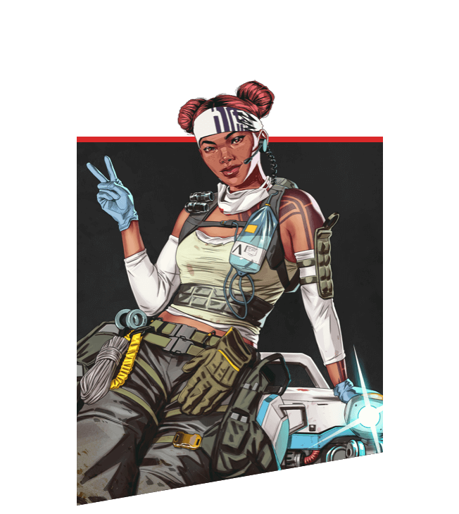

| Name |
Image |
Description |
Ultimate Ability |
| Gibraltar |
 |
Gibraltar is a unit in the battlefield. His play style is relatively defensive
but he is a force to be reckoned with.
|
Defensive Bombardment makes it rain with heavy artillery
|
| Lifeline |
 |
Lifeline is a support legend with her passive ability to revive and heal teammates.
This puts a big target on her back when fighting other enemy teams.
|
Care Package provides supplies such as ammo, shields, and even
gun attachments.
|
| Pathfinder |
 |
Pathfinder is a recon legend with his ability allowing him grapple around the area, and
his ability to scan survey beacons to detect where the ring is going to shift to.
|
Zipline Gun places a zipline that anyone can hook onto and travel across
|